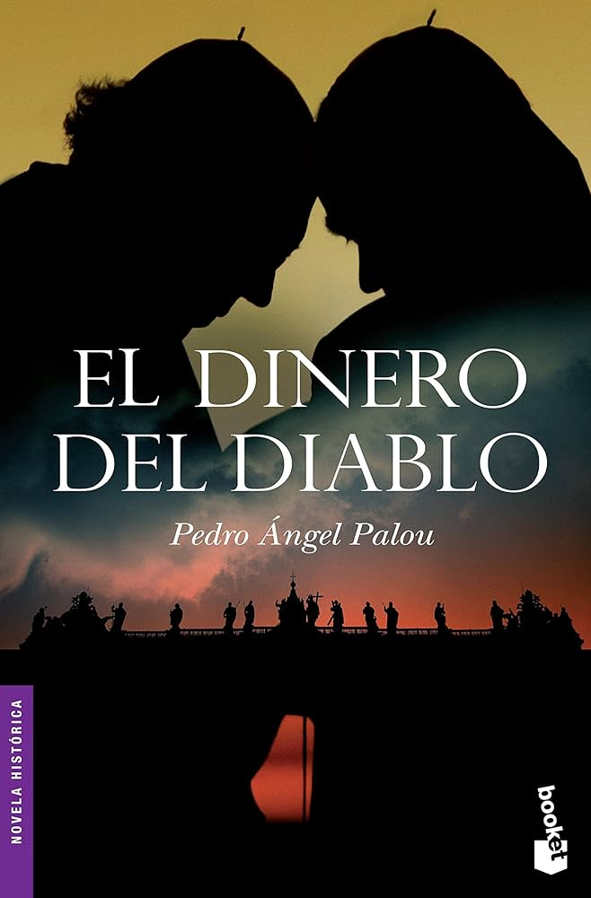
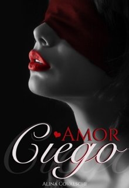
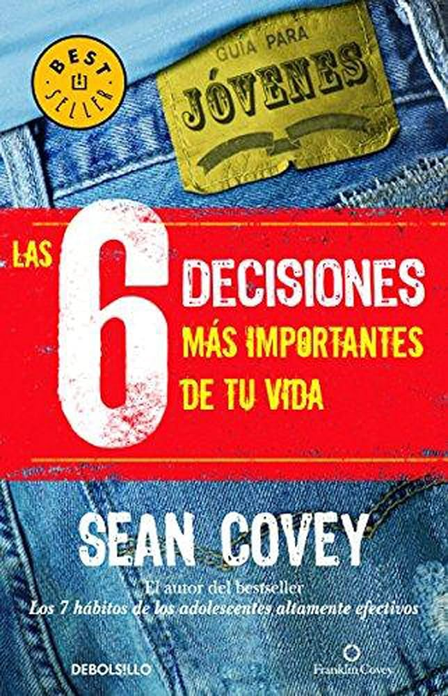

|  |
Una serie de asesinatos en las habitaciones del Vaticano, sin aparente vinculación, oculta sus razones en un lejano pasado.
Las respuestas podrían esconderse en las intrigas palaciegas de 1929, cuando creció el poder de la Santa Sede a la sombra de Mussolini
y Hitler, y en las extrañas circunstancias del final de Pío XI y su sucesión por Pío XII.
Las muertes acontecen a gran velocidad mientras el padre Gonzaga, experimentado detective, llega desde Oriente Próximo para investigar
los crímenes; lo acompaña Shoval, una enigmática forense israelí. Desde Ammán hasta el centro de Roma hay un camino más largo que el que se pueda sospechar.
Los protagonistas están atrapados en un juego de sombras donde nada es lo que aparenta: ni el pasado, ni el presente.
Una novela trepidante que bucea en la historia oculta del Vaticano. |
|  |
Una mujer que trabaja de secretaria de un hombre ciego descubre cómo la admiración por él va abriéndole paso al amor.
La ceguera la protege: una horrible configuración en el cuerpo, que no se atreve a mostrar, le sirve de coartada y de zona de exclusión.
Las dos oscuridades se atraen y se repelen como animales invisibles. Pritchett puede describir estos rituales o estos combates como nadie,
con un laconismo capaz de habilitar nuevos sentidos en cada omisión, en cada espacio en blanco. Así, las seis historias de este libro extraordinario
permiten reconstruir un mundo |
|  |
Las seis decisiones más importantes de tu vida es un manual que ayuda a que el joven madure y tome conciencia de que es un ser libre y que está en su mano desarrollar
todo su potencial, pero también malgastarlo dejándose llevar por la moda, lo placentero o arbitrario. En este sentido, le explica que todas sus acciones determinan,
de alguna u otra forma, su futuro y, por tanto, su felicidad. En esas circunstancias, el libro constituye una llamada de atención que incitará al adolescente a salir
de la comodidad, el conformismo ambiental o mediático y la impostura rebelde. Tomando como base los hábitos que popularizó su padre, Covey anima al lector a pensar
en el medio y largo plazo y a no restringir su reflexión a lo más inmediato. |